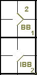

action { batter -> BB }
/* intentional four balls */
action { batter -> IBB , runner1 -> + }

The official scorer shall score an intentional base on balls when the pitcher makes no attempt to throw the last pitch to the batter into the strike zone but purposely throws the ball wide to the catcher outside the catcher’s box [OBR 9.14(b)].
The scorer must pay particular attention to intentional bases on balls. The intent must be very clear, and is usually justified by particular playing situations, such as the need not to confront a particularly good batter, or to fill up the bases so that all runners are forced to advance. The abbreviation “IBB” is used for an intentional base on balls.
An intentional base on balls counts as a normal base on balls, and is included in the cumulative count.
Example 22: After three normal bases on balls an intentional base on balls is given. Regardless of the intent, this counts as the fourth base on balls by this same pitcher.
| WBSC | Translation in the scoring tool | Tool |
|---|---|---|
|
|
/* The first batter arrives on base on a 'base on ball' */ action { batter -> BB } /* intentional four balls */ action { batter -> IBB , runner1 -> + } |
 |